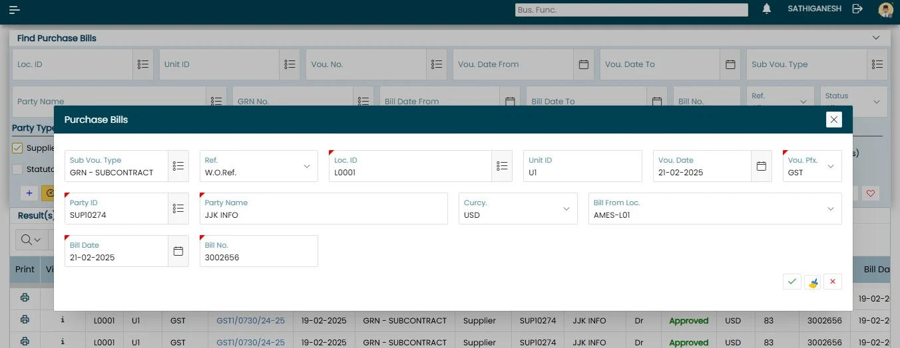
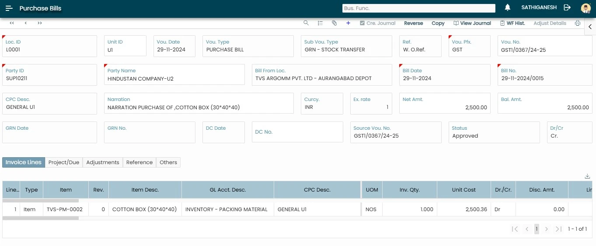

<div data-category="Financials" data-title="GRN Stock Transfer (Without reference)" data-updated="December 01, 2025" data-contributors="RoadmapIT" data-breadcrumb="Home,Financials,GRN-Stock Transfer (Without reference)">
  <div class="page-content">
    <p>A stock transfer direct helps user to book the bill without the records the receipt of goods from one location to another within the same company and without affecting the stock This screen is to view the Invoice receipt for GRN- Stock Transfer (Without Reference) type.</p>
    <h5>Navigation path:</h5>
    <p class="fs-6">Financials \ Transactions \ Party Document \ Purchase Bills</p>
    <h2>Registering Invoice</h2>
    <ul style="list-style-type: none; align-content: center">
      <li class="mouse-icon">By Clicking the <i class="bi bi-plus fs-4 mx-2 text-primary"></i> Add button we can create new document.</li>
    </ul>
    
    <ul style="list-style-type: none; align-content: center">
      <li class="mouse-icon">Enter Sub Vou.Type as GRN-Subcontract.</li>
      <li class="mouse-icon">Select Ref as W.O Ref.</li>
      <li class="mouse-icon">Select Loc ID  from LOV, Unit will be auto populated.</li>
      <li class="mouse-icon">Select Vou.Pfx.</li>
      <li class="mouse-icon">Select Party ID from LOV, Party name will be auto populated.</li>
      <li class="mouse-icon">Select Bill date and Enter Bill number.</li>
      <li class="mouse-icon">Click <i class="bi bi-check-lg fs-4 mx-2 text-success"></i></li>
    </ul>
    
    <ul style="list-style-type: none; align-content: center">
      <li class="mouse-icon">Party Document can be created directly in this with the sub vou type as GRN- Stock Transfer (W/O) ref. Click on Create Journal; Journal gets created.</li>
      <li class="mouse-icon">Press the post button to complete the entry and the document can be forwarded for approval.</li>
    </ul>
  </div>
</div>
